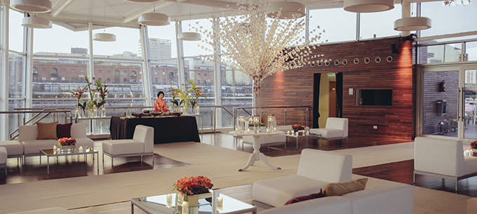

Eventos Corporativos

Compartí una jornada corporativa distinguida en Buenos Aires Walk eventos
Nos ocupamos de que la ambientación sea siempre de acuerdo a tu gusto. Desde los centros de mesa hasta la decoración de las sillas, pasando por cada uno de los detalles para formar un conjunto homogéneo y de calidad.
Por muy bueno que sea el catering, por lujoso que sea el salón, en sí mismos no logran el objetivo. Lo que hay que entender es que la ambientación es un conjunto y no una serie de cosas que tienen que estar correctas cada una de ellas. Una ambientación insuficiente es realmente notoria en un salón colosal y para eso vamos a poner a disposición tuya personal especializado en decoraciones para que te puedan dar y mostrar ideas o para que vos le puedas transmitir tus deseos.